GridFlow 0.4.0 - reference index
Conventions of this Manual
Grid Protocol
Picture Protocol
Unary Operators
Binary Operators
Objects for Input/Output
Objects for Generating
Objects for Computing
Objects for Coordinate Transforms
Reporting Objects
Objects intended for Picture Processing
Special Objects
External Picture Formats
Conventions of this Manual
Grid Protocol
This section is useful is you want to do more than just pictures with GridFlow.
each element of a grid is an integer. the range of allowed integer values is called signed 32-bit and is -2147483648 to 2147483647 (which is -231 to 231-1).
a single-dimensional grid of 3 elements (a triplet) is called dim(3). a three-dimensional grid of 240 rows of 320 columns of triplets is called dim(240,320,3).
There is a sequence in which elements of a Grid are stored and transmitted. Dimension 0 is called "outer" or "first" and dimension N-1 is called "inner" or "last". They are called so because if you select a position in the first dimension of a grid, the selected part is of the same shape minus the first dimension; so in dim(240,320,3) if you select row 51 (or whichever valid row number), you get a dim(320,3). if you select a subpart two more times you get to a single number.
At each such level, elements are sent/stored in their numeric order, and are numbered using natural numbers starting at 0. This ordering usually does not matter, but sometimes it does. Most notably, @import, @export and @redim care about it.
On the other hand, order of dimensions usually does matter; this is what distinguishes rows from columns and channels, for example. Most objects care about the distinction.
A grid with only 1 element in a given dimension is different from one lacking that dimension; it won't have the same meaning. You can use this property to your advantage sometimes.
Zero-dimensional grids exist. They are called dim(). They can only contain a single number.
Picture Protocol
This section is useful if you want to know what a picture is in terms of a grid.
A picture is a three-dimensional Grid:
- 0 : rows
- 1 : columns
- 2 : channels
Channels for the RGB color model are:
- 0 : red
- 1 : green
- 2 : blue
Because Grids are made of 32-bit integers, a three-channel picture uses 96 bpp (bits per pixel), and have to be downscaled to 24 bpp (or 16 bpp) for display. That huge amount of slack is there because when you create your own effects you often have intermediate results that need to be of higher precision than a normal picture. Especially, results of multiplications are big and should not overflow before you divide them back to normal; and similarly, you can have negative values all over, as long as you take care of them before they get to the display.
In the final conversion, high bits are just ignored. This means: black is 0, maximum is 255, and values wrap like with % 256. If you want to clip them, you may use "@ max 0" and "@ min 255" objects.
Unary Operators
 | absolute value of A |
 | randomly produces a non-negative number below A |
| 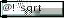 | square root of A, rounded downwards |
Binary Operators
In the following table, A is the value entered to the left, and B is the value entered to the right.
Angles are in hundredths of degrees. This means a full circle (two pi radians) is 36000. You convert from degrees to our angles by multiplying by 100. You convert from radians to our angles by multiplying by 18000/pi.
Hyperbolic functions (tanh) work with our angles too, so the same conversions apply. In case you wonder, there's a hidden link between Trigonometric and Hyperbolic functions that motivated me to use the same unit.
| A + B | |
| 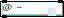 | A - B |
 | B - A |
 | A * B |
| 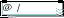 | A / B, rounded downwards |
 | B / A, rounded downwards |
 | A % B, non-negative remainder |
 | B % A, non-negative remainder |
| 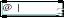 | A or B, bitwise |
 | A xor B, bitwise |
 | A and B, bitwise |
 | A * (2**(B % 32)), which is left-shifting |
| 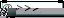 | A / (2**(B % 32)), which is right-shifting |
| 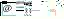 | if A is zero then B else A |
| if A is zero then zero else B | |
 | the lowest value in A,B |
| the highest value in A,B | |
 | -1 when A |
| 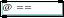 | is A equal to B ? 1=true, 0=false |
 | is A not equal to B ? |
 | is A greater than B ? |
| 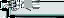 | is A not greater than B ? |
 | is A less than B ? |
 | is A not less than B ? |
 | B * sin(A) |
 | B * cos(A) |
 | arctan(A/B) |
| 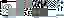 | tanh(A) |
 | floor(pow(a/256.0,256.0/b)*256.0) |
 | A raised to power B |
Objects for Input/Output
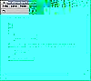
{kind=link}
method init () Creates an input object for an unspecified format. You need to use the open command to decide that. Remember that most formats produce dim(rows,columns,3) grids with 0-255 values. (Most.)
inlet 0 method open (format,format_specific_part...) This is the command that gives a particular resource to a @out object. This is done through a "format" (there is a list of formats in this manual). The other arguments depend on the chosen format. The format may be a file format or a protocol or a hardware device, etc.
inlet 0 method close () close may be necessary if you operate on "/dev/video", which can only be read by one at a time. otherwise it's usually not necessary.
inlet 0 method bang () sends a grid through the outlet. the grid may be the result of reading from a file, acquiring from a device, capturing from the screen etc. this is format-specific. most formats produce dim(rows columns {red green blue}). In formats that read from a file, reading another picture will continue if several pictures are concatenated in the file, but if the end of file is reached instead, it will rewind and send the first picture again. see section "External Picture Formats".
inlet 0 method option (selector,stuff...) for format-specific options. (usually in devices that masquerade as formats). see section "External Picture Formats".
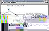
{kind=link}
method init () Creates an output object for an unspecified format. You need to use the open command to decide that. Remember that most formats expect dim(rows,columns,3) grids with 0-255 values. (Most.)
method init (rows,columns) This alternate way to create an @out automatically calls "open x11 here" and "option out_size rows columns".
inlet 0 method open (format,format_specific_part...) This is the command that gives a particular resource to a @out object. This is done through a "format" (there is a list of formats in this manual). The other arguments depend on the chosen format. The format may be a file format or a protocol or a hardware device, etc.
inlet 0 grid this is format-specific. most formats expect dim(rows columns {red green blue}). In formats that write to a file, sending a 2nd picture overwrites the first. see section "External Picture Formats".
inlet 0 method close () closes the file. usually not necessary.
inlet 0 method option (selector,stuff...) for format-specific options. (usually in devices that masquerade as formats). see section "External Picture Formats".
inlet 0 method option timelog (status) when status=1, current time (unix clock) and time since last frame-end are printed in the console. when status=0, it is off. default is 0.
outlet 0 method bang () sent when a complete grid has been received.

{kind=link}
This object allows you to import non-grid jMax data, such as integers and lists of integers. This object also reframes/resyncs integers and grids so that multiple grids may be joined together, or single grids may be split.
method init (dims...) the argument list specifies a grid shape that the numbers will fit into.
inlet 0 method int () begins a new grid if there is no current grid. puts that integer in the current grid. ends the grid if it is full. the constructed grid is not stored: it is streamed. the stream is buffered, so the output is in packets of about a thousand numbers.
inlet 0 method reset () aborts the current grid if there is one.
inlet 0 grid dim(dims...) this is the equivalent of filtering this grid through an @export object and sending the resulting integers to this @import object, except that it's about 10 times faster.
inlet 1 grid dim(rank) this grid is a dimension list that replaces the one specified in the constructor.
outlet 0 grid the grid produced from incoming integers and/or grids.
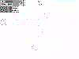
{kind=link}
this object is the opposite of @import.
method init () this object is not configurable because there isn't anything that could possibly be configured here.
inlet 0 grid dim(dims...) transforms this grid in a series of integers.
outlet 0 method int () elements of the incoming grid.
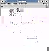
{kind=link}
holds two values, defaulting to (0,0). each time one is changed (by sending an integer in that inlet), a dim(2) grid is sent through the outlet.
method init ()no arguments.
inlet 0 method int ()
inlet 1 method int ()
outlet 0 grid dim(2)
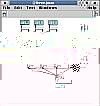
{kind=link}
holds three values, defaulting to (0,0,0). each time one is changed (by sending an integer in that inlet), a dim(3) grid is sent through the outlet.
method init ()no arguments.
inlet 0 method int ()
inlet 1 method int ()
inlet 2 method int ()
outlet 0 grid dim(3)
holds four values, defaulting to (0,0,0,0). each time one is changed (by sending an integer in that inlet), a dim(4) grid is sent through the outlet.
method init ()no arguments.
inlet 0 method int ()
inlet 1 method int ()
inlet 2 method int ()
inlet 3 method int ()
outlet 0 grid dim(4)
Objects for Generating

works like a regular [for] object plugged to a [@import] tuned for a dim(size) where size is the number of values produced by a bang to that [for].
method init (from,to,step)
inlet 0 method int () replaces the "from" value and produces output.
inlet 1 method int () replaces the "to" value.
inlet 2 method int () replaces the "step" value.
outlet 0 grid dim(size) where size is floor((to-from+1)/step)
Objects for Computing
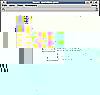
{kind=link}
This object computes a grid by computing "in parallel" a same operation on each left-hand element with its corresponding right-hand element. This is a massively parallel version of jMax's builtin arithmetic operators. In case you wonder, it's only parallel in the sense that all those computations are independent; there's no guarantee about how many of them will actually be computed at once.
method init (operator,value) the operator is one picked in the table of the 30 binary operators. the value (optional, zero by default) becomes the initial value of the right inlet.
inlet 0 grid dim(dims...) on each element of this grid, perform the operation together with the corresponding element of inlet 1. in the table of operators (at the top of this document) elements of inlet 0 are called "A" and elements of inlet 1 are called "B". the resulting grid is the same size as the one in inlet 0.
inlet 1 grid dim(dims...) any grid, preferably shaped like the one that will be put in the left inlet, or like a subpart of it (the contents will be redim'ed on the fly to fit the grid of inlet-0, but the stored grid will not be modified itself)
inlet 1 method int () stores a single int in the right inlet; the same int will be applied in all computations; this is like sending a dim(1) or dim() grid with that number in it.
outlet 0 grid
This object computes a grid by computing "in parallel" a same operation on each element of the grid.
method init (operator) the operator is one picked in the table of the 3 unary operators. they are "unary" because they take only one value.
inlet 0 grid
outlet 0 grid

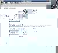
{kind=link}
@fold makes the last dimension of a grid disappear by combining elements together in each innermost array. For example, @fold + 0 on a RGB image will output a channelless image in which every value is the sum of red/green/blue values in a pixel. The zero is the starting value, so that is actually 0+r+g+b. You can get the number of values in a grid by passing it through @dim and then through @fold * 1.
method init (operator,base) the base value is optional and defaults to 0. the operator is one from the table of binary operators.
inlet 0 grid dim(dims..., last) produces a dim(dims) grid (the last dimension is removed). the incoming grid is split into dim(last) subparts; from each of those parts a result is produced by cascading the specified operation from the base value (specified in inlet 1) to all the elements in that subpart. (see examples below)
inlet 1 method int () changes the base value to use.
examples: [@fold +] is a sum of all elements (on the last dimensions); similarly, [@fold inv+] is an alternated sum, and [@fold * 1] is a product; [@fold & 1] can be used to mean "for all"; [@fold | 0] can be used to mean "there exists (at least one)"; [@fold ^ 0] can be used to mean "there exists an odd number of..." and [@fold ^ 1] "there exists an even number of...".

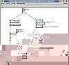
{kind=link}
method init (operator) the operator must be picked from the table of binary operators.
inlet 0 grid dim(anyA...)
produces a grid of size dim(anyA..., anyB...), where numbers are the results of the operation on every element of A and every element of B. the resulting array can be very big. Don't try this on two pictures (the result will have 6 dimensions)
inlet 1 grid dim(anyB...)
stores the specified grid, to be used when inlet 0 is activated.
When given a grid of Dim(3) and a grid of Dim(5) [@outer] will produce a grid of Dim(3,5) with the selected binary operation applied on each of the possible pairs combinations between numbers from the left grid and the ones from the right. for example : (10,20,30) [@outer +] (1,2,3) will give : ((11,12,13),(21,22,23),(31,32,33))

think of this one as a special combination of [@outer], [@], and [@fold]. this is one of the most complex operations. It is very useful for performing linear transforms like rotations, scalings, tilts, and color remappings.
method init (op_para,op_fold,base) op_para and op_fold are two operators picked from the table of binary operators. the base value has to be specified (has no default value yet).
inlet 0 grid dim(anyA..., lastA) creates a dim(anyA...,anyB...) grid by splitting the left-hand grid into dim(lastA) pieces, the right-hand grid into dim(lastB) pieces, doing an [@] on them with the specified op_para operator, and then a [@fold] on that with the specified op_fold operator and base value. lastA must be equal to lastB.
inlet 1 method int () changes the base value to that.
inlet 2 grid dim(anyB..., lastB) changes the right-hand side grid to that.
Objects for Coordinate Transforms

method init (dims...) the argument list specifies a grid shape that the numbers will fit into. (same as with @import)
inlet 0 grid dim(dims...) the elements of this grid are serialized. if the resulting grid must be larger, the sequence is repeated as much as necessary. if the resulting grid must be smaller, the sequence is truncated. then the elements are deserialized to form the resulting grid.
inlet 1 grid dim(rank) this grid is a dimension list that replaces the one specified in the constructor. (same as with @import)
outlet 0 grid redimensioned grid potentially containing repeating data.
example: with a 240 320 RGB image, @redim 120 640 3 will visually separate the even lines (left) from the odd lines (right). contrary to this, @redim 640 120 3 will split every line and put its left half on a even line and the right half on the following odd line. @redim 480 320 3 will repeat the input image twice in the output image. @redim 240 50 3 will only keep the 50 top lines.
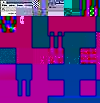
{kind=link}
A @store object can store exactly one grid, using the right inlet. You fetch it back, or selected subparts thereof, using the left inlet.
method init (number_type) The number type argument is optional and by default is int32, which allows the usual range of plus/minus two billions. With uint8, values are wrapped into the 0..255 interval, and stored in four times less memory.
inlet 0 method bang () the stored grid is fully sent to the outlet.
inlet 0 grid dim(dims..., indices) in this grid, the last dimension refers to subparts of the stored grid. sending a dim(200,200,2) on a @store that holds a dim(240,320,3) will cause the @store to handle the incoming grid as a dim(200,200) of dim(2)'s, where each dim(2) represents a position in a dim(240,320) of dim(3)'s. therefore the resulting grid will be a dim(200,200) of dim(3) which is a dim(200,200,3). in practice this example would be used for generating a 200*200 RGB picture from a 200*200 XY map and a 240*320 RGB picture. this object can be logically used in the same way for many purposes including color palettes, tables of probabilities, tables of statistics, whole animations, etc.
inlet 1 grid dim(dims...) the received grid is stored. if the storage type is uint8, the input is filtered to fit 0..255.
grids as stored, as indexed, or as assembled from multiple indexings.
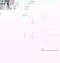
{kind=link}
method init () no arguments.
inlet 0 method bang ()creates a coordinate map that can be fed into the left input of @store to give the same result as a bang in that input; that coordinate map is dim(height,width,2), where each dim(2) is a (y,x) pair indexing a pixel.
inlet 1 method int ()a height.
inlet 2 method int ()a width.
outlet 0 grid a coordinate map.
@identity_transform builds a pixel-level transform grid suitable for using with inlet 0 of @store.
Sending an integer to inlet 2 sets the width of the resulting picture.
Sending an integer to inlet 1 sets the height of the resulting picture.
Sending a grid to inlet 0 generates said grid and sends it to inlet 0. Not guaranteed to be fast (use an intermediate @store as a cache if needed)

method init () no arguments.
inlet 0 grid a picture to be scaled.
inlet 1 method int ()a height.
inlet 2 method int ()a width.
outlet 0 grid a scaled picture.
@scale_to is normally fed the same inlet 1,2 values as @identity_transform, and chained from @identity_transform and to @store. This will scale an image of any size to the size specified in inlets 1,2. If it doesn't correspond the values of @identity_transform, part of the image will be trimmed and/or duplicated.
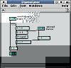
{kind=link}
typically you plug a @identity_transform into this object, and you plug this object into the left side of a @store. it will scatter pixels around, giving an "unpolished glass" effect.
method init () no arguments.
inlet 0 grid a coordinate map.
inlet 1 method int ()a spread factor.
outlet 0 grid a coordinate map.
@spread scatters the pixels in an image. Not all original pixels will appear, and some may get duplicated (triplicated, etc) randomly. Some wrap-around effect will occur close to the edges.
Sending an integer to inlet 1 sets the amount of spreading in maximum number of pixels + 1. even values translate the whole image by half a pixel due to rounding.
Reporting Objects

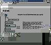
{kind=link}
Returns list of dimensions as a grid. Given a grid sized like Dim(240,320,4), @dim will return a grid like Dim(3), whose values are 240, 320, 4.
method init () no arguments.
inlet 0 grid dim(dims...) ignores any data contained within. sends a grid dim(length of dims) containing dims.
outlet 0 grid dim(rank) the list of dimensions of the incoming grid.
future use
Objects intended for Picture Processing
this is the object for blurring, sharpening, finding edges, embossing, and many other uses.
method init (op_para,op_fold,base)
inlet 0 grid dim(rows columns rest...) splits the incoming grid into dim(rest...) parts. for each of those parts at (y,x), a rectangle of such parts, centered around (y,x), is combined with the convolution grid like a [@] of operation op_para. Then each such result is folded like [@fold] of operation op_fold and specified base. the results are assembled into a grid that is sent to the outlet. near the borders of the grid, coordinates wrap around. this means the whole grid has to be received before production of the next grid starts.
inlet 1 grid dim(rows2 columns2) this is the convolution grid and it gets stored in the object. rows2 and columns2 must be odd numbers.
outlet 0 grid dim(rows columns rest...)
method init () no arguments. scales by 2.
method init (factor) future use: will scale by that factor.
method init (factor_y,factor_x) future use: will scale by those factors.
inlet 0 grid dim(y x {r g b}) identical to @scale_to with arguments that are exactly twice those of the incoming grid. It is several times faster.
outlet 0 grid dim(y x {r g b})

method init () no arguments.
inlet 0 grid dim(rows columns channels) produces a grid like the incoming grid but with different constrast.
@contrast adjusts the intensity in an image. resulting values outside 0-255 are automatically clipped.
inlet 1 method int () this is the secondary contrast. it makes the incoming black correspond to a certain fraction between output black and the master contrast value. no effect is 256. default value is 256.
inlet 2 method int () this is the master contrast. it makes the incoming white correspond to a certain fraction between output black and output white. no effect is 256. default value is 256.
outlet grid dim(rows columns channels)
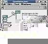
{kind=link}
@posterize reduces the number of possible intensities in an image; it rounds the color values.The effect is mostly apparent with a low number of levels.
method init () no arguments.
inlet 0 grid dim(rows columns channels) produces a posterized picture from the input picture.
inlet 1 method int () this is the number of possible levels per channel. the levels are equally spaced, with the lowest at 0 and the highest at 255. the minimum number of levels is 2, and the default value is 2.
example: simulate the 216-color "web" palette using 6 levels. simulate a 15-bit display using 32 levels.
Special Objects
future use.
objects of this class do nothing by themselves and are just an access point to features that don't belong to any object in particular.
method profiler_reset () resets all the time counters.
method profiler_dump () displays the time counters in decreasing order, with the names of the classes those objects are in. this is an experimental feature. like most statistics, it could be vaguely relied upon if only you knew to which extent it is unreliable. more on this in a future section called "profiling".
External Picture Formats
Subformat P6 only. Max-number can only be 255 (24-bit RGB).
method open ppm file (filename) opens the specified file, taken from the current directory or one of the jMax-specified data directories.
grid dim(rows columns 3) values 0-255
Support for RGB-24 (3 channels). If you bug me a bit you'll get ARGB-32 too.
method open ppm file (filename) opens the specified file, taken from the current directory or one of the jMax-specified data directories.
grid dim(rows columns 3) values 0-255

method open file (filename) opens the specified file, taken from the current directory or one of the jMax-specified data directories.
method open tcp (hostname,port) dials an specified hostname/port on the InterNet or compatible network. the TCP protocol is used.
method open tcpd (port) future use: waits for a call (and answers) for this port on the local machine via InterNet or compatible network. Answers the call.
This is GridFlow's special file format. This is the only I/O format that can hold absolutely anything that the [@store] object can. However this can only be stored in 32 bits-per-value.
This is the only picture format that currently supports TCP connections. This is still somewhat clunky: the socket only opens in client mode only; and upon bang, jMax freezes until the whole grid is received.

Video4Linux-1 devices, RGB-24 only. Variable picture size. should work for bttv based cards and the dc1 from miro, possibly dc10plus.
If you suffer from color inversion, you may feed the list "0 0 1 0 1 0 1 0 0" to a [@redim 3 3] and feed that to the right side of a [@inner * + 0]. Use that @inner object as a RGB-BGR converter.
color adjustments:
method option brightness (level)
method option hue (level)
method option colour (level)
method option contrast (level)
method option whiteness (level)
other options:
method option channel (level)
method option tuner (level)
method option norm (level)
method option size (height,width) sets the input size, especially when using a video digitalizer device

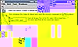
{kind=link}
method open x11 here () connects to the default X11 server, according to your environment variable "DISPLAY".
method open x11 local (display_number) connects to a display server on this machine.
method open x11 remote (host_name,display_number) connects to a remote X11 display server using TCP. Sorry, IP addresses are not supported (jMax limitation). Port number will be 6000 plus the display number, because of the X11 standard.
grid dim(rows columns {red green blue}) resizes the window to the size of the grid; encodes that grid in the display's pixel format; also displays it if autodraw > 0 the values must be in range 0-255, or else they will be "wrapped".
method bang () see format x11's option draw.
method autodraw () see format x11's option autodraw.
Destroying the object (or sending "close") should close the window. Because of how jMax works, this may be delayed until you do something else.
because of the design of Xlib, or if any of the connections involved crashes, then the whole program (fts) has to be terminated. (don't you love xlib). Something similar happens if you close any of the windows yourself, but IIRC this could be fixed.
only one window may be used per connection (to simplify matters; this doesn't reduce flexibility).
there is an additional argument that may be added to every "open" message; if you don't put it, a new toplevel window is created. if you put "root" then the screen's wallpaper will be used instead (it may fail to work with some popular window managers). You can also put a window number, e.g. 0x28003ff, you may connect to an existing window; you can find out the number of a window by using a tool like xwininfo, part of X11 standard tools.
method option out_size (height,width) changes the window's size, just like sending a grid dim(height,width,3) would.
method option draw () forces a redraw of the window's contents.
method option autodraw (level)
- 0 : option draw() is never automatically invoked
- 1 : option draw() is invoked after each grid is finished
- 2 : option draw() is invoked incrementally after each row is received. (but buffering may cause lines to come in groups anyway)
GridFlow 0.4.0 Documentation
by Mathieu Bouchard matju@sympatico.ca
and
Alexandre Castonguay acastonguay@artengine.ca